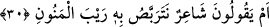

halktan uzaklaşmayı ve her şeyden kesilerek Allah’a yönelmeyi, O’nu talep etmeyi
kendileri çok uzak erişilmez görürler. Ancak bir kısım insan da vardır ki bunlar bu
toplumun istisnâsı olup; kalplerine Allah tarafından îman nakşedilen ve Allah’ın
kendilerini kendi rûhu ile teyîd ettiği kimselerdir. Allah’ın kendilerini teyid ettiği bu ruh
da talepte sadâkat rûhu ve Allah’ın kendilerini, kendilerinin de Allah’ı sevmelerinden
neş’et eden tohumdan hâsıl olmuş hüsn-i irâde rûhudur. Bu Allah’ın dilediğine verdiği
bir fazilettir. Böyle bir fazl-ı ilâhî olmasaydı gerçekten insan tabîatının okun yaydan
çıkması gibi dinden uzaklaşma husûsiyeti kaçınılmaz olurdu. Zira her ne kadar insanlar
namaz kılıp oruç tutuyor ve kendilerini müslüman sayıyorlarsa da aslında onlar tahkikle
değil taklitle hareket etmektedirler. Allahım bizi “Allah’ın göğsünü İslâm’a açtığı
kimse, Rabbinden bir nur üzerinde değil midir?” (ez-Zümer 39/22) âyetinde
buyurduğun kişilerden kıl!
Fakir (Bursevî) diyorum ki; âyet-i kerîmede gerçekten Rasûlullah (a.s)’a matûf ciddî
bir şereflendirme vardır. Şöyle ki: Allah Teâlâ kâfirlere cevap verme makamına
kendisini koyarak onların iddiâlarını bizâtihi reddetmiştir. Ayrıca bu âyet zarûri olarak
bildirilmesi gereken bir tavzîhdir. Zira vahye müteallık olan öğüt verme işi her ne kadar
Rasûlullah (s.a.)’in kemâl-ı aklının ve sözündeki doğruluğunun bir iktizâsı ise de aynı
zamanda onun kâhin veya mecnun olmadığını da kapsamaktadır. Her ne kadar bu nefy
zâhir-i hâle nisbeten yapılmışsa da zihinlerde bulunan şüpheyi bertaraf etmekten ve
tasdîki sağlamaktan da hâli değildir. Kelime-i şehâdet de bu kabildendir. Çünkü “lâ
ilâhe” kavli insanların tahayyül ettiği her türlü mabud tevehhümünü varlık sahnesinden
silmektedir. Aksi takdirde bu kavlin arkasından gelecek olan “ilallah” sözünü başka hiç
bir şeyle isbât mümkün olamaz. Bunu sen bu şekilde idrâk et. el-Mûin olan ancak Allah
Teâlâ’dır.
Bir efendi ki onun kıymeti çok yücedir
Ayağının tozu (toprağı) feleklerin baş tacıdır.
30. Yoksa onlar: (O,) bir şairdir; onun, zamanın felâketlerine uğramasını
bekliyoruz mu diyorlar?
“Yoksa onlar:” Âyet-i kerîmelerde tekrar edilen “em” edatı, “bel” ve “hemze”
anlamında munkatı olan harflerdir. Buradaki hemze ise inkâriye anlamındadır.
Bağavi, el-Halil’in Tûr sûresindeki bütün em harflerinin istifham mânâsı taşıyıp atıf
olmadıklarını söylediğini nakleder. Yâni ona göre “em” harflerinin hiçbiri atıf
mânâsında olmayıp munkatı anlam taşırlar.
Burhânu’l-Kur’an’da müellif bu sureyle ilgili olarak şöyle der: Allah bu surede on
beş adet “em” zikreder ki bunların hiçbiri muhataplara cevap niteliğinde olmayıp